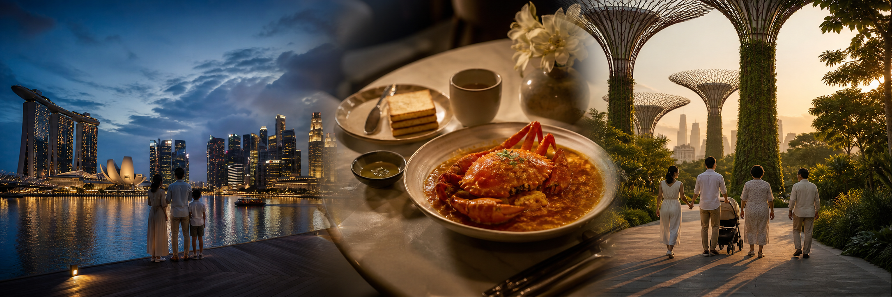

Flight reservation
Details pendingHKG → SIN
- Outbound arrival
- 08 Jul · 15:05
- Return departure
- 13 Jul · 13:25
- Flight no.
- 待加入
- Terminal
- 出發前確認
回程建議 09:00 出發往機場，預留 Jewel 打卡及買手信時間。

A private family travel edit
Family × Food × Shopping × Photo Spots
City lights · Local flavours · Family time
Your trip, at a glance
Everything you need, one tap away.
Travel Wallet
重要資料集中一頁；未有嘅確認資料已保留位置，出發前補上即可。
Flight reservation
Details pending回程建議 09:00 出發往機場，預留 Jewel 打卡及買手信時間。
Hotel reservation
08–10 JULMarina Bay 核心位置，連接多個商場；對 BB 車、婆婆及驟雨天氣都格外方便。
Six thoughtfully paced days
每日只安排一至兩個主景點，留白畀一家人慢慢行、慢慢食。
取行李後乘 Grab 到酒店，先讓大家安頓。
稍作休息，傍晚才出發。
黃昏至藍調時段散步影相，沿海路線平坦。
黑胡椒蟹、辣椒蟹、麥片蝦、炸饅頭。
咖椰多士、半熟蛋、奶茶，輕鬆開始一天。
全程冷氣商場，BB 車友善；下雨都不怕。
肉骨茶配油條及滷豆腐。
午後慢遊；晚上留低睇 Supertree Show。
沙嗲、炒粿條、福建蝦麵、甘蔗汁。
食飽再出發，帶足水及防曬。
長途直接搭 Grab，省腳骨力。
視乎 Sira 與婆婆狀態決定，唔使勉強。
以舒服、快上菜為優先。
轉場日保持輕鬆，行李交由 Grab 處理。
白色教堂與拱廊，午前光線柔和。
影相、Cafe、小店；窄路留意人流。
ION Orchard、Ngee Ann City、Paragon、Design Orchard。
一家人相聚，行程留白。
室內冷氣主景點，BB 車友善。
按現場狀態選擇最近、最舒服的午餐。
天氣好才去，帶帽、防曬及替換衫。
行街兼晚餐；或回市區食海鮮。
預留足夠時間 check-in、食早餐及買手信。
最後一張全家福；BB 車路線完善。
Bengawan Solo、IRVINS、TWG、Prima Taste、Kaya。
旅程完成，帶住相片同美食回憶回家。
Weather desk · Updated 03 JUL
預計高溫約 29–30°C、低溫約 28°C；首半月可能有短暫雷雨，行程以室內外彈性配搭。
每日帶輕便雨傘、BB 車雨擋及薄外套。雷雨通常短暫，落雨時先行商場或室內景點。
短暫驟雨
局部驟雨
多雲、短暫雨
間中有陽光
可能有驟雨
驟雨機會較高
Planning outlook only · 天氣會變動，建議每日早上以 myENV / Weather@SG 再確認。
Map / Area View
以 Pan Pacific Singapore 為旅程中心：Marina Bay 用步行，市中心短程 Grab，三個外圍區域直接叫車。
概念路線圖 · 並非按實際地理比例
酒店所在的核心區，Day 1–2 大部分行程都可以由 Pan Pacific 輕鬆步行到達。
Palm Beach Seafood · Ya Kun Kaya Toast · Song Fa Bak Kut Teh
Marina Square · Millenia Walk · Suntec City
Marina Bay · Helix Bridge · Merlion Park · Gardens by the Bay · Supertree Grove
適合將地道美食安排在 Marina Bay 行程尾段，晚餐後直接 Grab 回酒店。
Lau Pa Sat · JUMBO Seafood（Riverside 一帶）
市中心便利店與商業區小店
Lau Pa Sat 建築 · Raffles Place 城市街景
文化建築、彩色街道與 Cafe 集中，適合半日慢慢影相及逛小店。
PS.Cafe · % Arabica · Haji Lane Cafes
Haji Lane 本地小店
CHIJMES · Haji Lane
高級商場密集，冷氣充足，婆婆與 Sira 都可以舒服地慢慢行。
Din Tai Fung · PS.Cafe · 商場餐廳
ION Orchard · Ngee Ann City · Paragon · Design Orchard
Orchard Road · Design Orchard 外牆
以 Oceanarium 做室內主景點，天氣好才追加海灘，行程彈性最高。
Resorts World Sentosa · VivoCity 餐廳
VivoCity
Singapore Oceanarium · Palawan Beach · Siloso Beach
距離市中心較遠，建議直接 Grab；早上精神最好時出發，下午按體力加 River Wonders。
園區休閒餐廳 · 回酒店後 Din Tai Fung
Zoo / River Wonders Gift Shops
Singapore Zoo · River Wonders
回程日的最後一站，提早到機場影 Rain Vortex，再一次過買齊新鮮手信。
Jewel 餐廳 · Cafe
Jewel Changi · Bengawan Solo · IRVINS · TWG · Bacha
Jewel Rain Vortex
A family-friendly table
由地道早餐到海鮮晚宴，餐桌都係旅程的一部分。
Marina Bay / Riverside
黑胡椒蟹、辣椒蟹、麥片蝦、炸饅頭
One Fullerton · 海景
蟹、麥片蝦，順道欣賞 Marina Bay 夜景
Marina Square
咖椰多士、半熟蛋、奶茶
Suntec City
肉骨茶、油條、滷豆腐
Raffles Quay
沙嗲、炒粿條、福建蝦麵、甘蔗汁
多間商場分店
小籠包、蒸蛋、菜飯；BB 餐最穩陣
市區多間分店
咖啡、甜品與簡潔打卡空間
BB ◉◉◉ = 非常方便 · ◉◉○ = 大致方便 · 評級為行程規劃參考
Curated retail route
冷氣、育嬰室、餐廳與手信一次過安排好。
親子用品、餐廳、日常品牌
設計家品、精品、Cafe
綜合品牌、童裝、餐飲
名牌、美妝、Bacha Coffee
Takashimaya、童裝、食品
高級品牌、兒童用品、餐廳
新加坡本地設計品牌
綜合購物、親子餐飲、超市
最後補貨、甜點、咖啡、伴手禮
The family photo edit
不追景點數量，只留低最靚、最有故事的畫面。
黃昏 18:30 · 米白／淡藍穿搭
人流中等 · BB 車方便 · 用廣角留天空藍調時段 · 簡潔單色穿搭
人流中等 · BB 車方便 · 利用橋身線條構圖早上或入夜 · 白色系
人流較多 · BB 車方便 · 側面避開遊客17:00 後 · 大地色／綠色
人流中等 · BB 車方便 · 低角度影 Supertree亮燈前 30 分鐘 · 淺色系
表演時多人 · BB 車方便 · 先影相再睇 show11:00 前 · 米白、香檳金
人流較少 · BB 車方便 · 拱門做天然畫框上午 · 撞色小配件
午後多人 · 路較窄 · 用牆畫做乾淨背景室內 · 淺色上衣
人流中等 · BB 車方便 · 關掉閃光燈17:00 後 · 度假亞麻色
部分沙地不便 · 逆光影剪影 · 天氣好才去10:00 左右 · 深藍／白色
BB 車方便 · 上層取景更完整Local photo assets: CHIJMES — Eustaquio Santimano / CC BY 2.0; Haji Lane — Terence Ong / CC BY-SA 3.0; Oceanarium — Moheen Reeyad / CC BY-SA 4.0; Jewel — Nkon21 / Wikimedia Commons. Images cropped and colour-treated for this guide.
Sira’s comfort comes first
Sira 可以在 BB 車瞓覺，唔需要為午睡特意折返酒店。
每日最多一至兩個主景點，留彈性比一家人。
優先選擇有冷氣商場及可推 BB 車路線。
長距離用 Grab，婆婆與 Sira 都更舒服。
商場、機場及主要景點通常設有育嬰室。
Before leaving
Ready, set, Singapore
勾選狀態會保留喺瀏覽器；即使離線開啟，清單仍然可以使用。
Planning allowance
以下為 3 人旅程嘅地面開支預留，未計機票、酒店及個人購物。實際價格以預訂時為準。
其餘以信用卡、Apple Pay 或 GrabPay 為主。
Bring Singapore home
最後一天 Jewel 集中補貨，斑蘭蛋糕最後先買。
Good to know
出發前 save 低，旅途中就可以少一點思考、多一點享受。
已足夠應付小店或臨時現金需要。
大部分地方可用信用卡、Apple Pay 或 GrabPay。
Grab、Google Maps、Klook、Mandai、Singapore Oceanarium。
出發前設定好，落機即可叫車及導航。
7 月炎熱潮濕，常有驟雨；防曬與雨傘都要帶。
帶 BB 和婆婆，長距離不建議搭 MRT；Grab 最舒服。